Logos, icons and graphics
Real brand files from the Figma file and the website repository. SVGs are plain text: open the URL, or the raw.githubusercontent.com link, to read the markup.
Logos
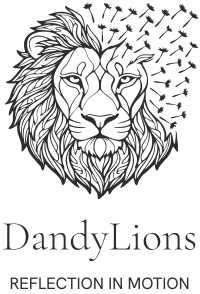
Full lockup, charcoal
Lion symbol above the DandyLions wordmark and the REFLECTION IN MOTION tagline. Charcoal #2D2D2D.


Full lockup, ivory
Same lockup in ivory #F5F2EC.


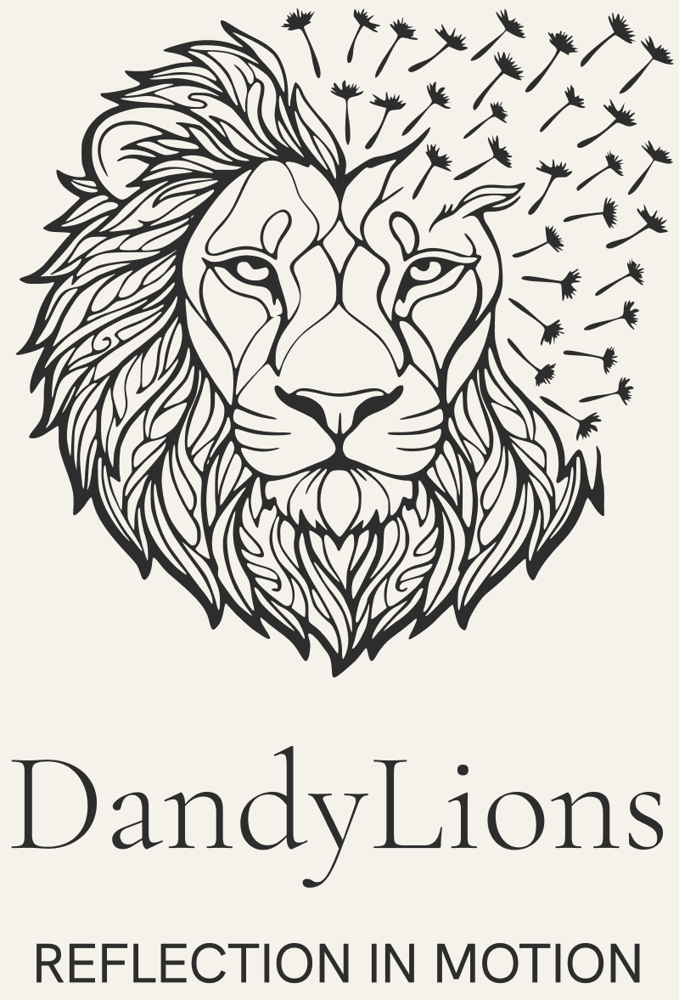
Full lockup, charcoal (PNG)
Raster of the charcoal lockup on a solid ivory #F5F2EC background (800 x 1177).

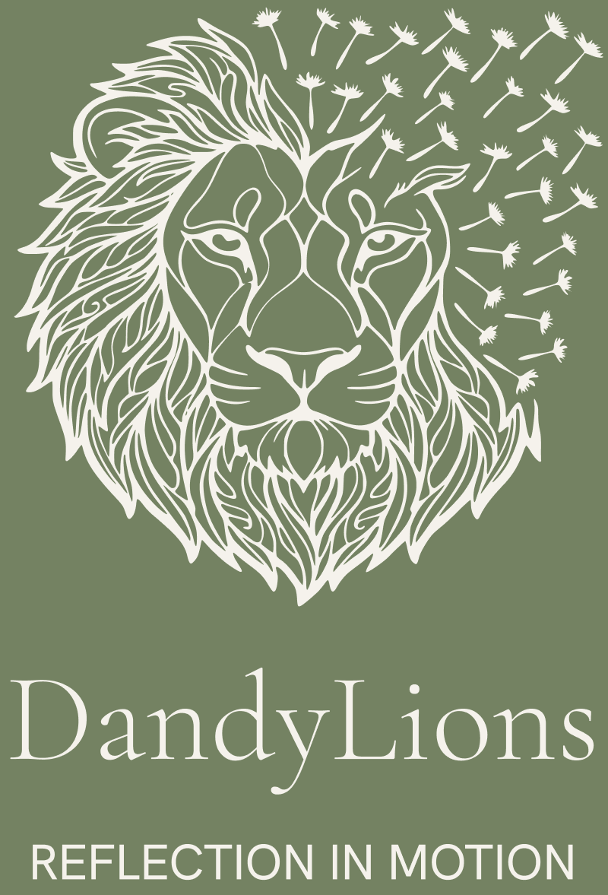
Full lockup, ivory (PNG)
Raster of the ivory lockup on a solid sage #748262 background (800 x 1177).

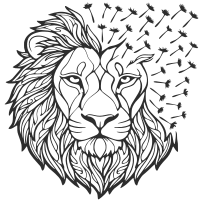
Lion symbol, charcoal
Line-art lion head with dandelion seeds drifting from the mane, charcoal #2D2D2D.


Lion symbol, ivory
Same symbol in ivory #F5F2EC.


Wordmark, charcoal
'DandyLions' in Cormorant Garamond Light, outlined, charcoal #2D2D2D.


Wordmark, ivory
Same wordmark in ivory #F5F2EC.


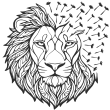
Website logo symbol
The compact lion symbol the website uses, charcoal #2D2D2D. The site recolours it with a CSS mask (charcoal on ivory, ivory on sage).


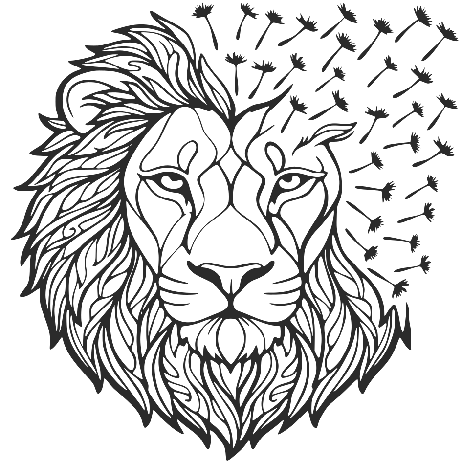
Original lion artwork
The original high-detail lion line art, charcoal #2B2B2B, 945 x 945 viewBox.


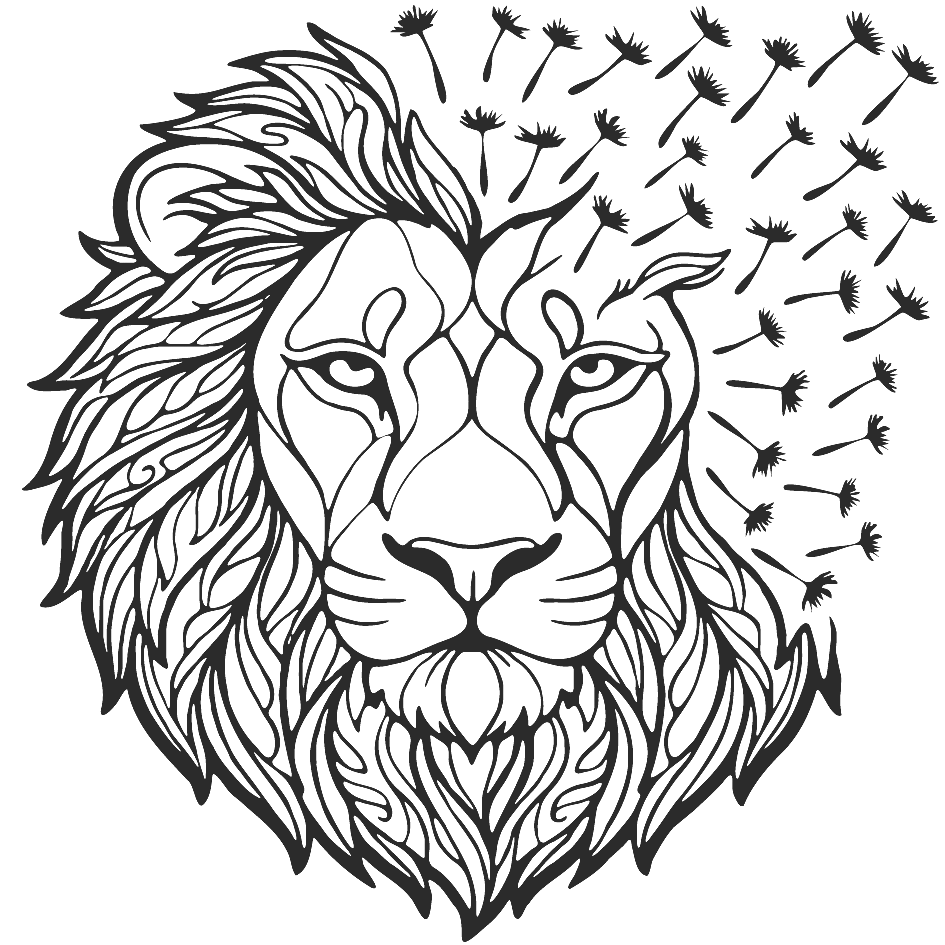
Lion artwork, charcoal (PNG)
Raster of the original lion art in charcoal on transparent.

Lion artwork, ivory (PNG)
Raster of the original lion art in ivory on transparent.


Logo mark button, charcoal
Small charcoal lion mark on transparent, as used for the site's mark button.

Logo mark button, ivory
Small ivory lion mark on transparent.

Favicon
The site favicon (lion), 32 x 32.
Icons (design-system icon set)
Alert / error (circle with exclamation mark)


Archetype: dandelion


Archetype: dandy


Archetype: lion (sun-like face)


Arrow up-right (open, external link)


Check mark (bullets, success)


Chevron down


Chevron left


Chevron right


Chevron up


Close (X)


Compass (diamond in circle)


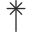
Dandelion artwork (small)


Eye: vision


Lion artwork (small line icon)


Mail / envelope


Map pin / location


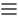
Menu (three lines)


Minus


Compass: mission


Plus


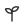
Sprout: legacy


Trend up: ambition


Graphic devices and textures
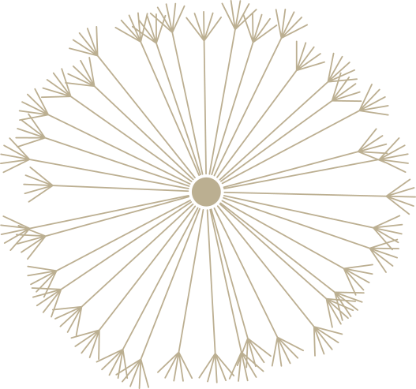
Dandelion seed head
Gold #907948 line drawing of a dandelion seed head at 60% opacity.


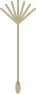
Drifting seed
Single gold #907948 dandelion seed at 60% opacity.


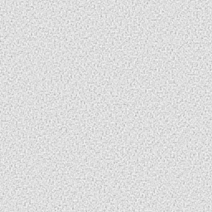
Paper grain texture
Seamless paper-grain noise tile (300 x 300).